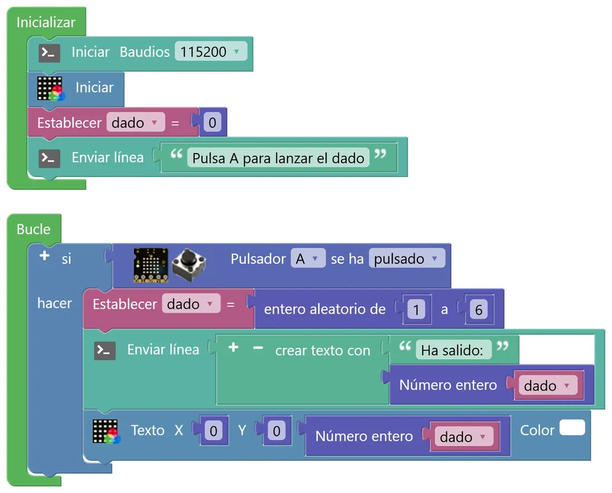
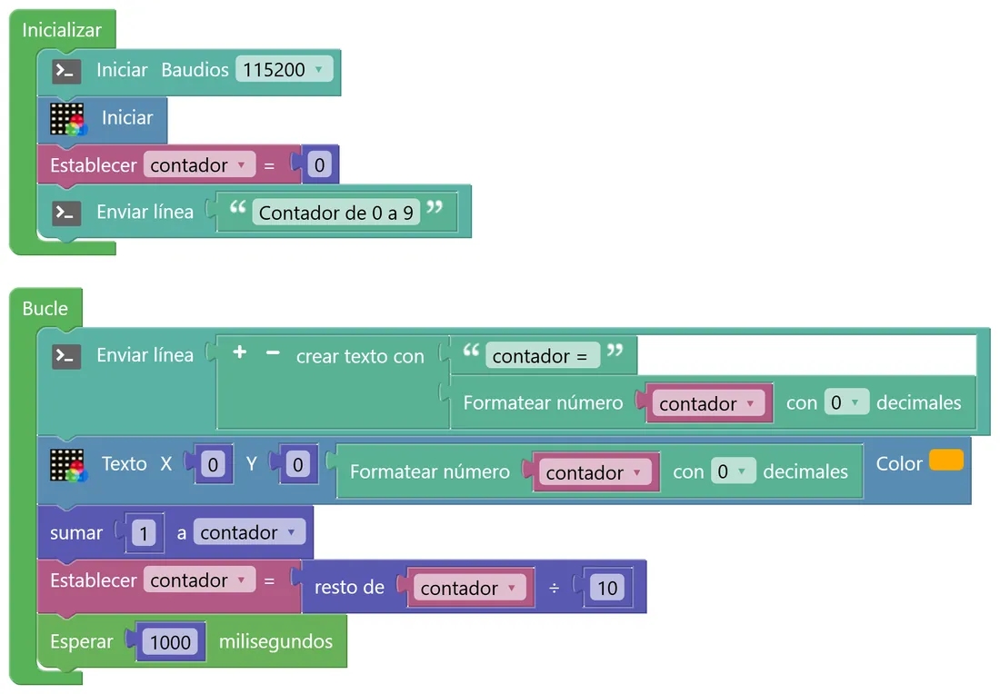
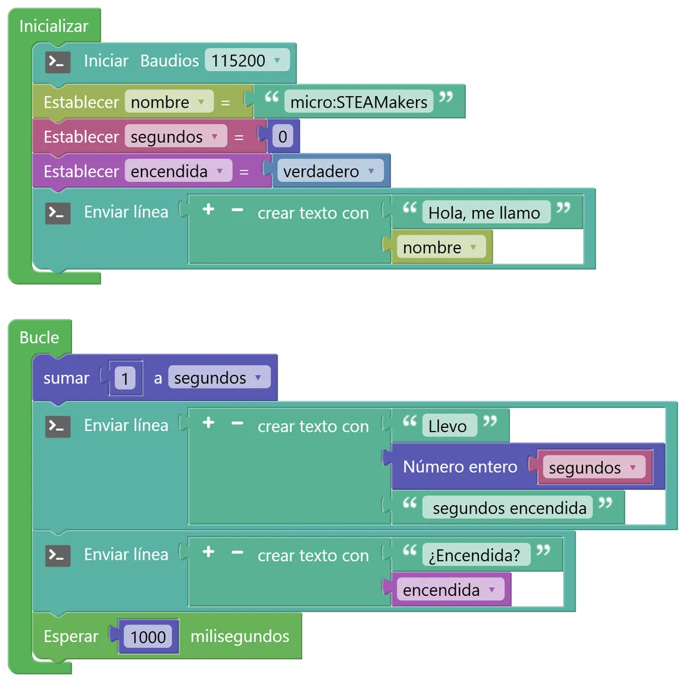

N2 Variables: la memoria de la placa
Hasta ahora la placa hacía siempre lo mismo. Para que «recuerde» cosas (cuántas veces has pulsado, qué número ha salido, cuánto tiempo lleva encendida) necesitamos variables. Ya las conoces de Python; aquí verás que tienen tipo, que se ven en la consola y que, a veces, nos engañan.
🎯 Objetivo
- Crear variables de tipo número, texto y verdadero/falso, y darles un valor inicial.
- Modificar una variable mientras el programa funciona (sumar, guardar un número al azar…).
- Mostrar el valor de una variable en la consola y en la matriz, mezclado con texto.
- Detectar y corregir un error que no impide que el programa funcione, pero hace que muestre algo raro.
🧠 Antes de empezar: una caja con nombre… y con tipo
Una variable es un espacio de la memoria del microcontrolador al que le ponemos un nombre para guardar un dato y usarlo después. En Python podías escribir dado = 4 y Python adivinaba el tipo. En STEAMakersBlocks, en cambio, cada tipo de variable tiene su propio bloque (y su color), porque el programa se traduce a C++, un lenguaje que necesita saber desde el principio qué clase de dato va a guardar cada variable.
| Tipo en STEAMakersBlocks | Para qué sirve | En Python | En C++ (lo que genera) |
|---|---|---|---|
| Número | Contadores, medidas, resultados de cálculos | int / float | double |
| Texto | Nombres, mensajes | str | String |
| Verdadero / falso | Saber si algo está pasando o no (encendido, alarma activada…) | bool | boolean |
🧩 Programa 1 · El dado electrónico
Cada vez que pulses el botón A, la placa elegirá un número al azar del 1 al 6, lo guardará en la variable dado, lo mostrará en la matriz y lo contará por la consola. Usamos el botón solo como «disparador»: en el N3 aprenderás a sacarle todo el partido.
💡 Para entenderlo: cajas con etiqueta
Una variable es como una caja con una etiqueta: la etiqueta es el nombre (dado) y dentro guardas un dato que puedes cambiar cuando quieras. El tipo es la forma de la caja: en una caja de huevos no cabe una carta. Por eso C++ quiere saber desde el principio qué vas a guardar: un número, un texto o un sí/no.
¿Y por qué hay que «convertir» un número para enseñarlo? La consola y la matriz solo saben mostrar texto, es decir, letras y cifras dibujadas. El número 7 que guarda la placa es un valor para hacer cuentas; para verlo hay que convertirlo en el carácter «7». Ese es el trabajo de Número entero o de Formatear número, y cada uno lo hace a su manera.

- Crea la variable: en Variables, pulsa Crear variable… (Número) y llámala
dado. Al crearla aparecen en ese menú sus bloques Establecer dado = y dado. - En Inicializar: consola a 115200, Iniciar la matriz, Establecer dado = 0 y un mensaje que diga qué hay que hacer.
- En Bucle, un bloque si (menú Lógica) con la condición Pulsador A se ha pulsado (menú micro:STEAMakers → Sensores).
- Dentro del si: Establecer dado = entero aleatorio de 1 a 6 (menú Matemáticas), un Enviar línea con crear texto con «Ha salido: » + Número entero (dado), y el bloque Texto de la matriz (micro:STEAMakers › NeoMatrix) con el mismo número. Número entero está en Matemáticas. crear texto con está en Texto. Con sus botones + y − cambias el número de huecos: pon uno por cada trozo de texto o dato que quieras unir.
- Lanza el dado 30 veces y apunta cuántas veces sale cada número. ¿Salen todos más o menos lo mismo? ¿Esperabas que salieran exactamente 5 de cada?
- Fíjate en la matriz: el 1 aparece pegado a la izquierda y es más estrecho que el resto. ¿Por qué crees que pasa? (Pista: cada número es un dibujo de puntos y no todos miden lo mismo).
🐞 Programa 2 · El contador que miente
Este programa cuenta de 0 a 9 una y otra vez, un número por segundo. Funciona… pero algo no cuadra. Tu misión es de detective: móntalo tal cual, súbelo y observa con atención la consola y la matriz. Hay un error escondido.

🛠️ Móntalo paso a paso
- Crea una variable de número llamada contador (Variables › Crear variable… (Número)).
- En Inicializar: Iniciar Baudios 115200 (Comunicaciones › Puerto serie), Iniciar la matriz (micro:STEAMakers › NeoMatrix), Establecer contador = 0 y un Enviar línea con «Contador de 0 a 9».
- En Bucle: Enviar línea con crear texto con de dos huecos: «contador = » y Formatear número (Texto) con la variable y 0 decimales. crear texto con está en Texto. Con sus botones + y − cambias el número de huecos: pon uno por cada trozo de texto o dato que quieras unir.
- Debajo, el bloque Texto de la matriz (micro:STEAMakers › NeoMatrix) en X = 0, Y = 0, otra vez con Formatear número, y el color que quieras.
- Después: sumar 1 a contador (Matemáticas) y Establecer contador = resto de contador ÷ 10 (el bloque «resto de» también está en Matemáticas). Así, al llegar a 10 vuelve a 0.
- Termina con Esperar 1000 ms (Tiempo). Móntalo tal cual, con el error incluido: lo vas a investigar.
- ¿En qué columna aparece el 1? ¿Y el resto de números se ven enteros?
- Mira la consola con lupa: cuenta los espacios que hay entre el «=» y el número. ¿Cuántos esperabas?
- Encuentra el bloque culpable, cámbialo por otro que ya conoces y comprueba que el problema desaparece.
💡 Pista 1
El programa no tiene un error de lógica: el contador cuenta bien. El problema está en cómo se convierte el número en texto antes de enviarlo a la consola y a la matriz.
💡 Pista 2
En la consola sale un espacio de más delante del número. En la matriz, un espacio no se ve, pero ocupa sitio: empuja el número hacia la derecha.
💡 Pista 3
Mira la sección «Antes de empezar» de este nivel y la Guía rápida: ¿qué bloque se recomienda para mostrar un número sin decimales?
🧩 Programa 3 · La ficha de la placa: los tres tipos juntos
Un programa con una variable de cada tipo: el nombre de la placa (texto), los segundos que lleva encendida (número) y si está encendida (verdadero/falso).

🛠️ Móntalo paso a paso
- Crea las tres variables en Variables, cada una con su botón: Crear variable… (Texto) → nombre; Crear variable… (Número) → segundos; Crear variable… (Boolean) → encendida. Fíjate en que cada tipo tiene un color distinto.
- En Inicializar: consola a 115200, Establecer nombre = un texto (Texto), Establecer segundos = 0 y Establecer encendida = verdadero (el bloque verdadero/falso está en Lógica).
- Un Enviar línea con crear texto con «Hola, me llamo » + la variable nombre.
- En Bucle: sumar 1 a segundos (Matemáticas); un Enviar línea con «Llevo » + Número entero(segundos) + « segundos encendida»; otro con «¿Encendida? » + encendida; y Esperar 1000 ms.
- La variable
encendidavale «verdadero», pero en la consola sale un 1. ¿Qué crees que saldría si valiera «falso»? - Quita el bloque «Número entero» de la línea de los segundos y conecta la variable directamente. ¿Qué cambia en la consola? ¿Por qué crees que pasa?
- Pulsa RESET: ¿con qué valor vuelven a empezar los segundos? ¿Dónde se decide ese valor?
🚀 Retos
Color al azar
Cada vez que pulses A, la matriz entera se rellena con un color aleatorio y la consola muestra sus valores, por ejemplo «R = 120 G = 33 B = 250». Necesitarás tres variables y el bloque Rellenar R G B.
Contador de tiradas
Mejora el dado para que lleve la cuenta de las tiradas y la consola diga «Tirada 7: ha salido 3». ¿Dónde tiene que estar el bloque que suma 1 a las tiradas?
¿Es justo el dado?
Cuenta cuántos seises van saliendo y muestra en la consola el porcentaje de seises. Con el botón A lanzas una vez; con el B, cien veces de golpe. ¿A qué número se acerca el porcentaje cuantas más tiradas haces? ¿Por qué?
🔧 Bajo el capó: tipos, azar y el espacio invisible
Las variables se declaran al principio del programa en C++. STEAMakersBlocks añade un prefijo a las de texto (s_) y a las de verdadero/falso (b_) para no confundirlas:
double segundos; // Número → número con decimales (64 bits) String s_nombre; // Texto boolean b_encendida; // Verdadero/falso
Por eso un número de STEAMakersBlocks siempre «tiene decimales»: es un double. Si lo envías tal cual, String(segundos) lo escribe con dos decimales («5.00»). Y un boolean convertido a texto se escribe como 1 (verdadero) o 0 (falso).
🎲 El dado por dentro
double math_random_int(int a, int b) { if (a > b) { int c = a; a = b; b = c; } return (double)random(a, b+1); }
La función random(mín, máx) de Arduino no incluye el máximo; por eso STEAMakersBlocks le suma 1, para que el 6 también pueda salir. En el ESP32, random() usa el generador de números aleatorios que lleva el propio chip, que aprovecha el ruido eléctrico de su circuitería.
🐍 Lo mismo en Python
import random dado = random.randint(1, 6) # incluye el 6 print("Ha salido:", dado)
Fíjate: randint de Python sí incluye los dos extremos; random de Arduino no. Detalles así son los que provocan errores «de uno de más o de uno de menos».
El espacio invisible. El bloque «Formatear número con 0 decimales» se traduce como String(contador, 0). Esa función reserva siempre un hueco mínimo de decimales + 2 caracteres y lo rellena con espacios por la izquierda: con 0 decimales, el 1 se convierte en «␣1». En la consola apenas se nota, pero en la matriz el espacio ocupa 3 columnas y empuja el número fuera. El bloque «Número entero» genera String((long)contador), que convierte primero el número en entero y no añade relleno.
🔎 ¿Lo has entendido?
Cuando termines, haz una captura con tu puntuación para el porfolio.
📁 Al porfolio
- Capturas de tus tres programas y de la consola de cada uno.
- Tu tabla con los resultados de lanzar el dado 30 veces.
- El «informe del detective» del Programa 2: qué observaste, qué bloque era el culpable, cómo lo arreglaste y una foto de la matriz antes y después.
- El reto que hayas hecho, con su captura de consola.
- Captura de tu resultado en «¿Lo has entendido?».